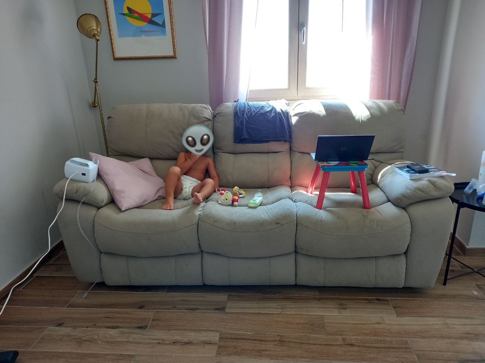

Why another blog post?
I told you, you had the wrong guy. Anyway, I’ll try to answer.
Internet is a fantastic place, you are plugged into a reality where you can learn whatever you want, whenever you want and at you pace.
What I didn’t find yet - on web2.0 - is how to fail. How to fail programmatically, periodically and frequently. As you can image, I failed a lot and hope to keep failing at high rate.
For me, failing is the essence of learning, the essence of success. The Lhumann’s indicator 1 of productivity was permanent notes produced per day. The Bottoni’s indicator 2 of success is a simple counter of failings: greater the better.
Everything started long time ago, maybe 6 years ago. I was trying to learning Machine Learning the old way: 1. collected all theoretical books; 2. collected all theoretical courses; 3. started the journey; 4. felt uncomfortable; 5. stopped; 6. and repeat the process with a slightly different theoretical book and course.
That’s guided me here.
5 months ago I restarted again. The approach to Machine Learning was gradually different and this seems to be very efficient and effective.
I followed FastAI course. In one week I completed all lectures and developed a simple system: - a box classifier which identified the kind of box with an accuracy of 97%; - a web app, which took a picture, sent it to the model and showed the result; - everything deployed in test environment.
Hope to show it as soon as my current company will make it possible.
It was funny, I accomplished more in that week then in 6 years of try and fail. But everything died again.
I got overwhelmed at work. It pushed me to say goodbye to Machine Learning. Another KO. You know, when something really interesting you, one day you succeed. That day is not today.
After other 5 months, today, I’m back to the mean. To the normality 3. I understood that life is not easy and is not linear. At the time I’m writing both my sons got Covid19, high fever, zero sleep. I understood to embrace those things, the gifts that life give to us 4.
I’m ready to start again, from chapter 0.
What’s my next step?
I restarted ML journey and I’m happy.
During those years full of failures, I sharpened my skills, where I improved a lot, I think. From note taking to programming. From learning to memorizing. All is summarized in: be more dynamic and less static.
Let me pretend, for a moment, that I will accomplish the following steps.
To be able to mastering Machine Learning with FastAI approach I need to be a practitioner. To be a practitioner a have to do lots practice. To do lots practice a have to spend extra hours. To be able to spend extra hours I have to be motivated. To be motivated I have to be persistent. To be persistent I have to enjoy it.
That’s the chaining rule of the heaven.
I listen to everything on 1x speed. I admire all you folks that do 1.5x or 2x, but my brain needs time to process the ideas. Sometimes I pause the podcast/audiobook & just reflect on a single sentence for a while. I used to think I need to improve this but now I just accept it.
I’m happy to read this from Lex Fridman. It means I have to watch Jeremy at 0.5x divided by few tens speed.
The approach to learning, as said before, seems working. So that’s what I’ll do: 1. Review last notes, if there’s something 2. Watch lecture, first iteration. All in one breath 3. Watch lecture, second iteration. Pausing as needed, experimenting, exploring and building (lots of -ing) 4. Going through FastAI book, kaggle notes and random links 5 5. Do questionnaire and find weakness 6. Focus on a project, only one. Do it well
That’s wonderful approach doesn’t come from my neurons but are suggested by Radek Osmulski’s book and Jeremy Howard tips. Yes, it’s strange, I bought a book. I’m not used to.
Additional and personal trick to force me studying is live streaming my session study. Embarrassing and funny moment will face.
Deadline: end of August 2022.
I can infinitely try to learn ML and get a finite result, as per Zeno’s Paradox.
I’ll keep you updated.
Now let’s start. Again.